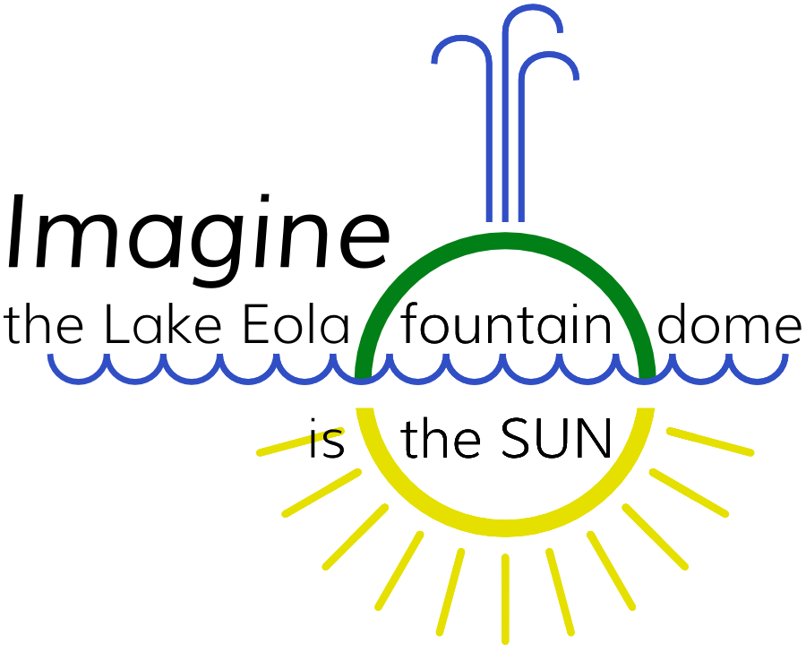

This is part of a whole solar-system model that spans central Florida.

The Eola Sun Project is the largest solar-system model in the United States. All sizes in the model are accurate, so viewers can appreciate the enormous scales of our celestial backyard. Since almost every model is deceptive, visiting parts of the model should bring startling new perspectives of our place in this corner of the cosmos.
The Sun, in this model, is represented by the large green dome of the fountain in Lake Eola in downtown Orlando. This “Sun” is 18 meters across, making a ratio to the real Sun 1 : 44.3million.
That scale puts the rocky inner planets of our solar system around Orlando, within a few minutes' walk, and the outer planets as far away as a 45 minute car ride.
The planets' models were designed and placed by schoolkids of nearby public schools, with the guidance of scientists and teachers. Each planet is also the correct relative size.
This project was made possible with funds from The City of __________, The City of __________, __________ County, __________ County, __________ Foundation, and __________ PTSA contributed money and expertise.
The universe extends beyond our backyard, beyond what we see every day, beyond the mundane. Because we don’t have experience thinking about them, we aren’t very good at thinking about the very small and very big. When we have a shallow mental toolkit, a lot of reality is too deep to fathom.
Let’s explore the next step larger than we are usually accustomed to thinking, and get a sense of our celestial backyard.
You’ve seen models already. Regular models have several problems. Model designers make compromises and generally favor “stuff” over “not stuff”. As a consequence, almost everyone has several lies stuck in their heads about how we fit in our little corner of the cosmos. A proper model of the solar system can never fit between your hands, or even in one room. Space is big.
Distance matters.
By “a great model”, we mean both good, in that it will be accurate in scale and good at teaching citizens about our place, but also we mean big. It will be the largest model of the solar system in the United States. Fourth largest in the world.
We are going to use our city and region and state to make a model that brings extraordinary scale into intuitive grasp, and inspires citizens to think in perspectives outside the mundane.
We have a notional Sun and center in this model. The fountain in Lake Eola represents Orlando in many minds, and the fountain dome is a perfect stand-in for the Sun.
We will paint, sculpt, or draw the planets that orbit the Sun. Since scale accuracy is a goal of this model, we’ve already calculated orbital paths, and the great news is that almost all orbits cross a public school or park or public space. Every planet will be adopted by a middle-school, and its part in the model will be designed and placed by students, guided by scientists and teachers.